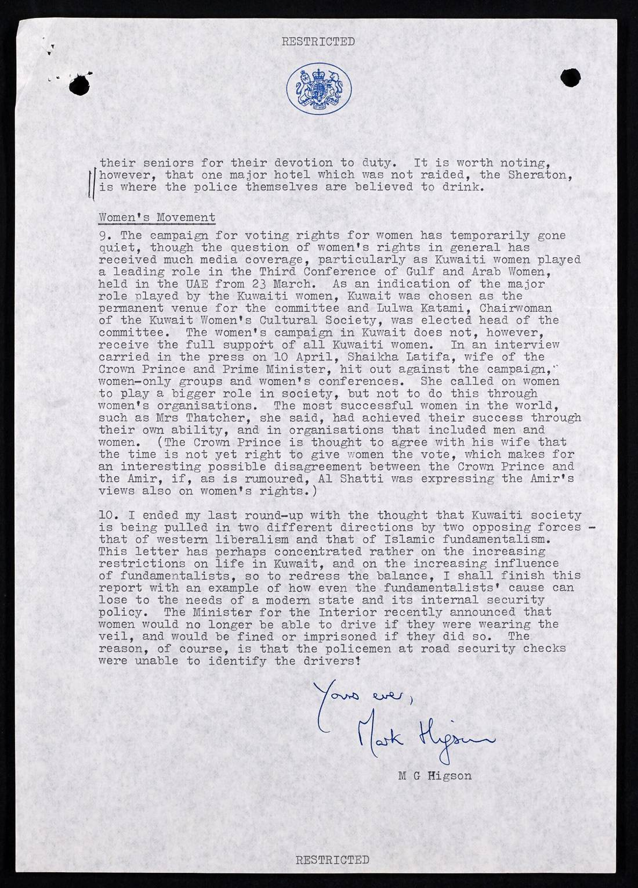
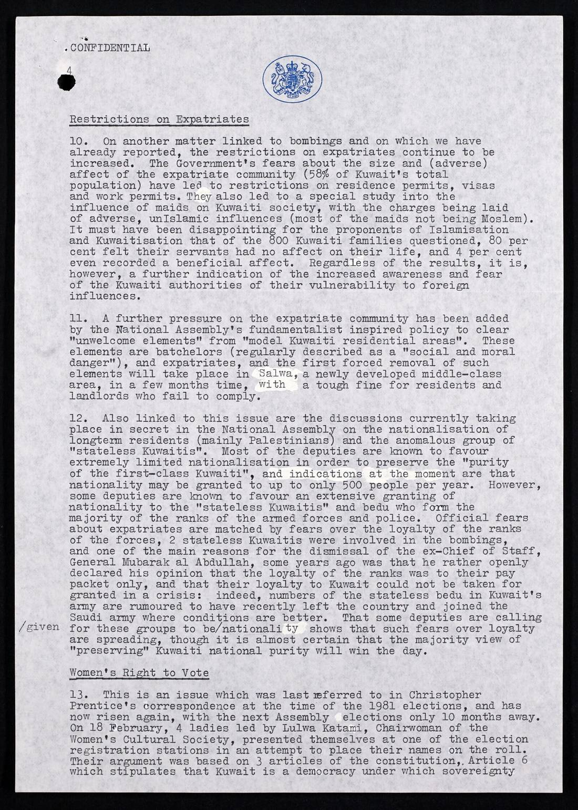

18 February 1984 · British Embassy report on internal political affairs in Kuwait
Lolwa Al-Qatami leads women to register to vote
What it is
On 18 February 1984, four women led by Lolwa Al-Qatami (spelled Lulwa Katami in the file), Chairwoman of the Women's Cultural Society, went to an election registration station to put their names on the roll, citing the Constitution. In March she was elected head of the committee of the Third Conference of Gulf and Arab Women, with Kuwait chosen as its permanent home.
Why it matters
A British record of Lolwa Al-Qatami's leadership in the fight for Kuwaiti women's right to vote.
Who is meant
Identified by her role as chair of the Women's Cultural Society, which matches the family's record of her work. The record does not give her father's name.
Page copies

FCO 8/5479, p. 53

FCO 8/5479, p. 72
Original text
Page 72, Women's Right to Vote:
13. This is an issue which was last referred to in Christopher Prentice's correspondence at the time of the 1981 elections, and has now risen again, with the next Assembly elections only 10 months away. On 18 February, 4 ladies led by Lulwa Katami, Chairwoman of the Women's Cultural Society, presented themselves at one of the election registration stations in an attempt to place their names on the roll. Their argument was based on 3 articles of the constitution, Article 6 which stipulates that Kuwait is a democracy under which sovereignty …
Page 53, Women's Movement:
9. The campaign for voting rights for women has temporarily gone quiet, though the question of women's rights in general has received much media coverage, particularly as Kuwaiti women played a leading role in the Third Conference of Gulf and Arab Women, held in the UAE from 23 March. As an indication of the major role played by the Kuwaiti women, Kuwait was chosen as the permanent venue for the committee and Lulwa Katami, Chairwoman of the Kuwait Women's Cultural Society, was elected head of the committee.
English translation
الصفحة ٧٢، حق المرأة في التصويت:
١٣. هذه قضية ذُكرت آخر مرة في مراسلات كريستوفر برنتيس وقت انتخابات ١٩٨١، وقد عادت إلى الواجهة الآن مع بقاء عشرة أشهر فقط على انتخابات المجلس المقبلة. ففي ١٨ فبراير حضرت أربع سيدات بقيادة لولوة القطامي، رئيسة الجمعية الثقافية النسائية، إلى أحد مراكز تسجيل الناخبين في محاولة لقيد أسمائهن في الجداول. واستندت حجتهن إلى ثلاث مواد من الدستور، منها المادة ٦ التي تنص على أن نظام الحكم في الكويت ديمقراطي، السيادة فيه …
الصفحة ٥٣، الحركة النسائية:
٩. هدأت حملة حق المرأة في التصويت مؤقتا، لكن قضية حقوق المرأة عموما نالت تغطية إعلامية واسعة، خاصة أن المرأة الكويتية أدت دورا قياديا في المؤتمر الثالث للمرأة الخليجية والعربية الذي عُقد في الإمارات ابتداء من ٢٣ مارس. ودلالة على الدور الكبير للمرأة الكويتية، اختيرت الكويت مقرا دائما للجنة، وانتُخبت لولوة القطامي، رئيسة الجمعية الثقافية الاجتماعية النسائية الكويتية، رئيسة للجنة.
Sources
The National Archives, London, digitised by the Arabian Gulf Digital Archive (agda.ae). Images reproduced by permission of The National Archives, London, England.
Archive reference
FCO 8/5479 · Internal political affairs in Kuwait
How this text was made: Typed from the archive's own text reading of the scan, corrected against the scan where the reading was garbled. … marks text left out. Arabic translation by Claude; please review.